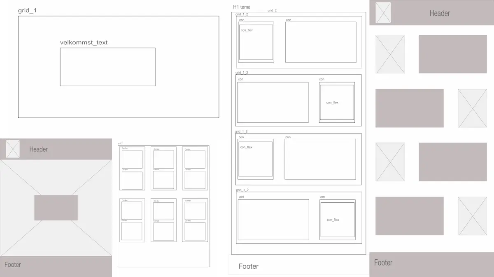
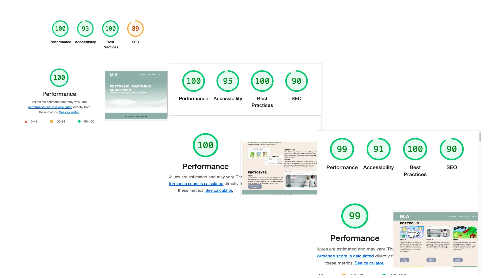

Portfolio-site

Wireframe
Jag började med att göra wireframes och layoutdiagram till sidan. Bara för att få en överblick över att jeg skulle få in allt på sidan

design
Splashbild
Jag valde att göra en splashbild till min framsida för att fånga intresset av mina besökare. Jag valde att använda mig utan gradient-tools i Illustratior för att få något att hända i bilden. Jag valde att den mörkaste färgen skulle vara samma färg som navigationsmenun och sedan gå mot det vita hållet längst ned.
Färg
Jag har vald en mörkgrön färg som bas. Jag har sedan via Adobe colorwheel fått ut färgens komplementfärgspar.

Test
Lighthoustest
Jag gjorde ett lighthouse-test för att se om det ser bra ut datamässigt och om kontrasterna ser bra, bagrund mot text, men också för att se att inte bilderna är förstora
Klik for siten